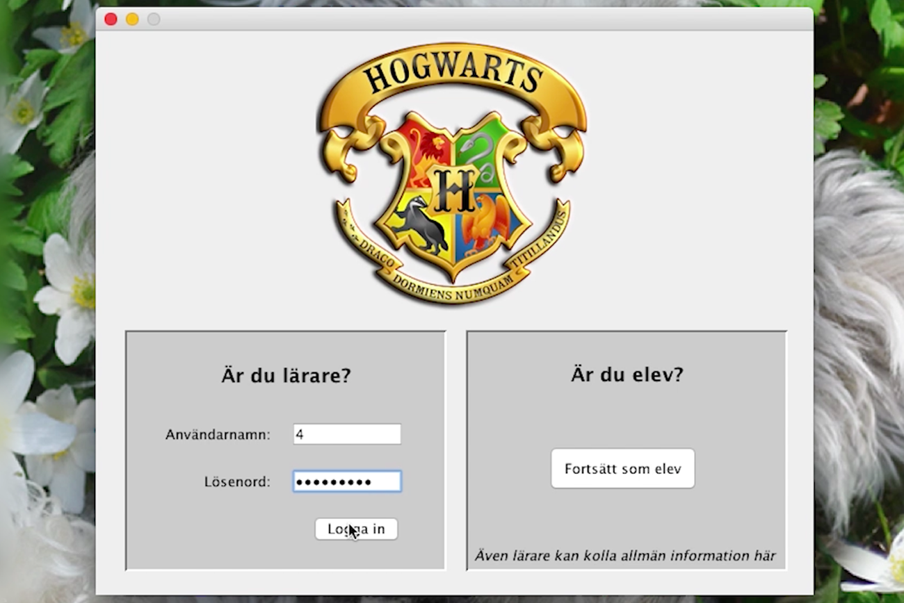
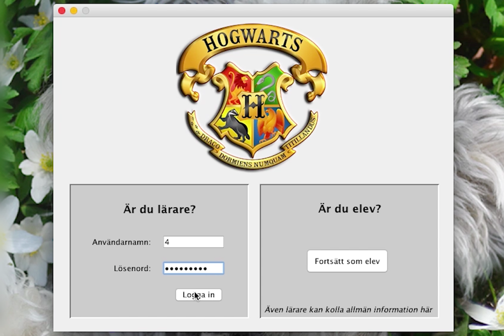

JAVAMySQL
Administrative system
School assignment. An administrative system for Hogwarts that both teachers and students can use. Based on a requirement specification the system was to be programmed in Netbeans, together with an already existing database. Teachers can add, change or delete students, courses and grades. Teachers can also add or retract points in the House Cup. Students can use the system for information searches, like their grades or courses. I put a lot of effort in making the system user-friendly, and managed to create a system that's easy to navigate and has a nice beginner level of design to it.